| Layout Type | Also Known As | Best For | Example Industries |
|---|---|---|---|
| Process Layout | Functional Layout, Job Shop | High variety, low volume | Hospitals, Machine Shops, Universities |
| Product Layout | Flow Line, Assembly Line | Low variety, high volume | Automotive Assembly, Food Processing |
| Hybrid/Cellular Layout | Group Technology, Cell Layout | Medium variety, medium volume | Electronics Manufacturing, Furniture |
| Fixed-Position Layout | Project Layout | Very large or immobile products | Shipbuilding, Aircraft, Construction |
4 Plant Layout and Facility Design
4.1 Learning Objectives
By the end of this chapter, you will be able to:
- Identify and describe the four basic types of facility layouts
- Compare the advantages and disadvantages of each layout type
- Apply the steps involved in designing a process layout
- Calculate cycle time, theoretical minimum stations, and line efficiency for product layouts
- Understand the principles of warehouse and office layout design
Why is Plant Layout Important?
Plant layout directly impacts:
- Productivity: Efficient layouts minimize wasted movement and time
- Cost: Poor layouts increase material handling costs by 20-50%
- Safety: Well-designed layouts reduce accidents and injuries
- Flexibility: The right layout allows adaptation to changing demands
- Employee Morale: Good layouts improve working conditions
4.2 Types of Facility Layouts
There are four basic layout types, each suited to different production requirements:
4.2.1 Visualizing the Layout Spectrum
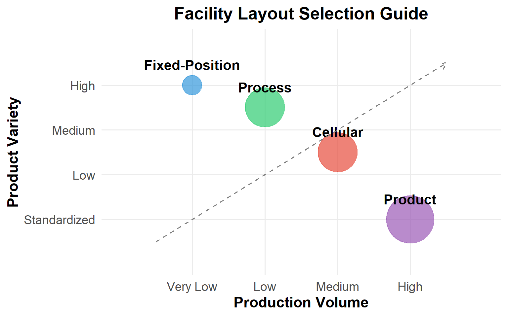
4.3 Process Layout (Functional Layout)
In a process layout, similar resources (machines, equipment, workers with similar skills) are grouped together. Work flows between departments based on the specific requirements of each job.
Warning: Using `size` aesthetic for lines was deprecated in ggplot2 3.4.0.
ℹ Please use `linewidth` instead.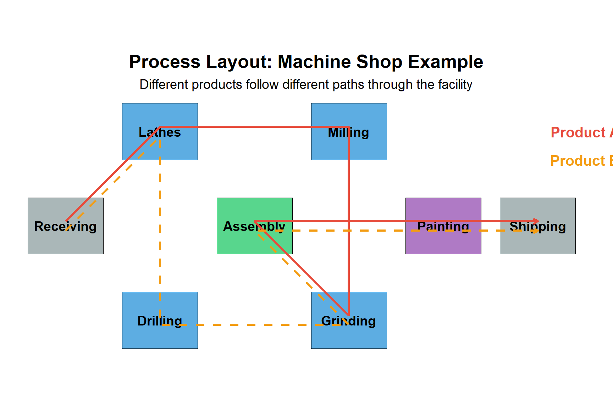
4.3.1 Characteristics of Process Layouts
| Characteristic | Description |
|---|---|
| Equipment | General-purpose machines |
| Labor | Skilled workers required |
| Flexibility | High - can handle variety |
| Processing Speed | Slower due to varied routing |
| Material Handling | Higher costs (complex paths) |
| Scheduling | Complex - different routes |
| Space Requirements | Higher - WIP inventory storage |
Discussion Question: Can you identify a process layout in your daily life?
Think about: - A hospital emergency room (patients routed based on their needs) - A university campus (students move between buildings for different classes) - A grocery store (customers choose their own path) - A machine shop (parts routed based on required operations)
What makes these process layouts? Similar functions are grouped together, and “products” (patients, students, customers) follow different paths based on their individual needs.
4.3.2 Real-World Examples
4.4 Product Layout (Assembly Line)
In a product layout, equipment and workstations are arranged in a line according to the sequence of operations needed to produce the product. Every unit follows the same path.
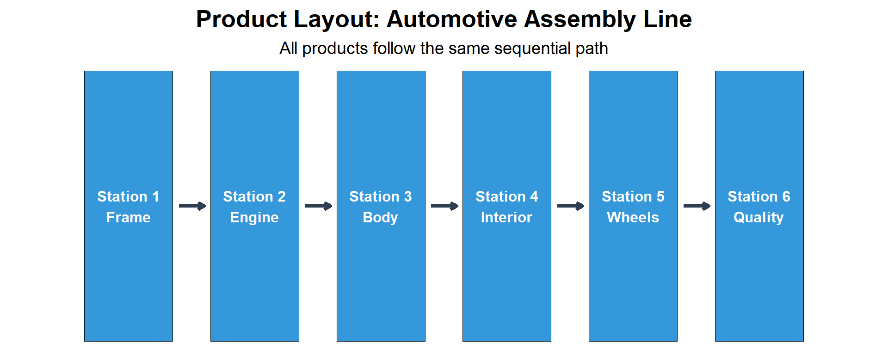
4.4.1 Characteristics of Product Layouts
| Advantage | Disadvantage |
|---|---|
| High production rate | High initial investment |
| Low unit cost | Low flexibility |
| Low material handling | Line stops affect all |
| Simple scheduling | Monotonous work |
| Less WIP inventory | Requires balanced workloads |
Quick Quiz: Product Layout
Question: A car wash where vehicles move through a series of cleaning stations is an example of which layout type?
Answer: Product Layout - all cars follow the same path through the same sequence of operations.
4.5 Hybrid Layout (Cellular Manufacturing)
Hybrid layouts combine the flexibility of process layouts with the efficiency of product layouts. The most common type is the cellular layout using Group Technology.
4.5.1 Group Technology Concept
Group Technology (GT) identifies parts with similar characteristics and groups them into part families. Machines are then arranged into cells to process these families.
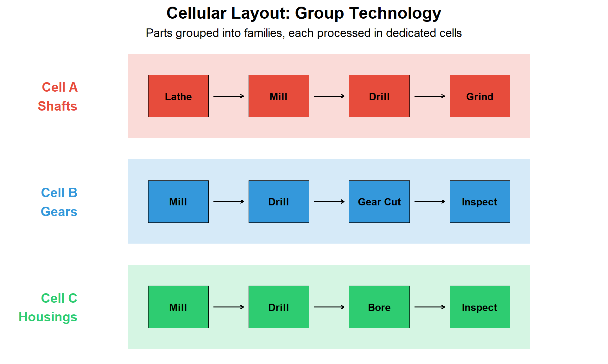
Discussion Question: Benefits of Cellular Manufacturing
What are the main benefits of cellular manufacturing over traditional process layouts?
- Reduced material handling - Parts stay within the cell
- Shorter lead times - No waiting between departments
- Less WIP inventory - Smaller batches, faster flow
- Improved quality - Workers responsible for complete part
- Team accountability - Cell teams own their output
4.6 Fixed-Position Layout
In a fixed-position layout, the product remains stationary while workers, equipment, and materials are brought to it. This is used when the product is too large or heavy to move.
4.6.1 Examples of Fixed-Position Layouts
- Shipbuilding - Ships built in dry docks
- Aircraft manufacturing - Large aircraft assembled in hangars
- Construction - Buildings, bridges, dams
- Surgery - Patient remains stationary
Challenge Question: Managing a Fixed-Position Layout
What are the unique challenges of managing a fixed-position layout?
Think about: - Scheduling deliveries of materials and equipment - Coordinating multiple contractors/teams - Limited space around the product - Weather and environmental factors (outdoor projects) - Ensuring safety with many workers in one area
4.7 Designing Process Layouts
Designing an effective process layout involves three main steps:
4.7.1 Step 1: Gather Information
You need to determine: - Space requirements for each department - Available space in the facility - Closeness relationships between departments
4.7.1.1 From-To Matrix (Load Matrix)
A From-To matrix shows the number of trips or loads between departments:
| Receiving | Machining | Assembly | Painting | Shipping | |
|---|---|---|---|---|---|
| Receiving | - | 100 | 50 | 0 | 0 |
| Machining | 0 | - | 200 | 50 | 0 |
| Assembly | 0 | 0 | - | 100 | 60 |
| Painting | 0 | 0 | 0 | - | 150 |
| Shipping | 0 | 0 | 0 | 0 | - |
4.7.2 Step 2: Develop Block Plans
Use the Load-Distance Model to evaluate layout alternatives:
\[\text{Total Cost} = \sum_{i=1}^{n} \sum_{j=1}^{n} L_{ij} \times D_{ij} \times C\]
Where: - \(L_{ij}\) = Number of loads between departments \(i\) and \(j\) - \(D_{ij}\) = Distance between departments \(i\) and \(j\) - \(C\) = Cost per unit distance
4.7.3 Interactive Example: Comparing Two Layouts
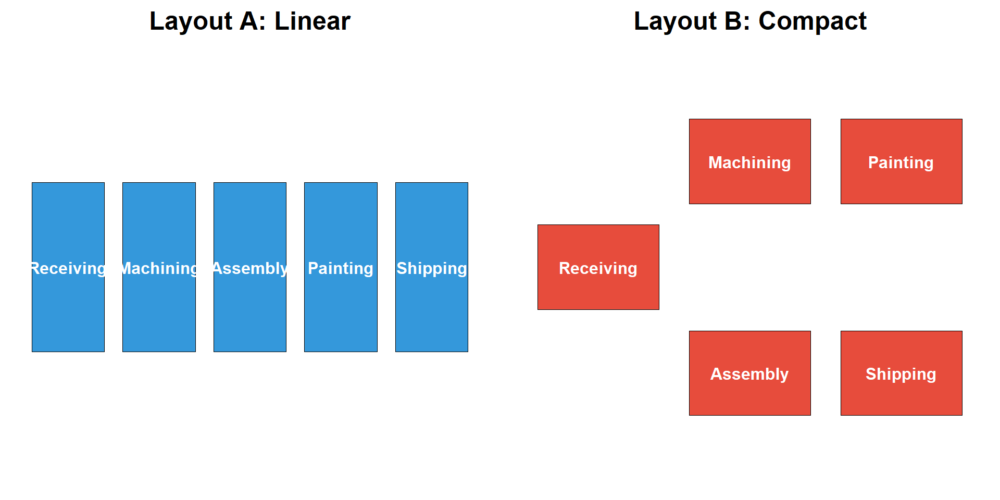
Live cell — try different from-to volumes or layout distances.
Why does the linear layout win in this case?
In this example, the linear layout (A) wins because the process flow is essentially sequential (Receiving → Machining → Assembly → Painting → Shipping).
When flow is sequential, a product layout (linear arrangement) is more efficient. Process layouts are better when there’s varied routing between departments.
4.7.4 Step 3: Develop Detailed Layout
Once the block plan is selected: - Determine exact sizes and shapes of departments - Plan aisle locations and widths - Consider utilities, safety exits, and accessibility - Use CAD software or 3D modeling for visualization
4.8 Designing Product Layouts (Line Balancing)
The key challenge in product layout design is line balancing - assigning tasks to workstations to minimize idle time while meeting production requirements.
4.8.1 Line Balancing Steps
- Identify tasks and precedence relationships
- Calculate required cycle time
- Calculate theoretical minimum number of stations
- Assign tasks to stations
- Calculate efficiency
4.8.2 Key Formulas
Cycle Time: \[C = \frac{\text{Available Production Time}}{\text{Desired Output}}\]
Theoretical Minimum Stations: \[TM = \frac{\sum t_i}{C}\]
Line Efficiency: \[\text{Efficiency} = \frac{\sum t_i}{n \times C} \times 100\%\]
Where: - \(C\) = Cycle time - \(\sum t_i\) = Total task time - \(n\) = Number of workstations
4.8.3 Interactive Example: Pizza Assembly Line
| Task | Description | Time (sec) | Predecessors |
|---|---|---|---|
| A | Roll dough | 40 | - |
| B | Spread sauce | 25 | A |
| C | Add cheese | 20 | B |
| D | Add toppings | 35 | B |
| E | Season | 15 | C, D |
| F | Box pizza | 30 | E |
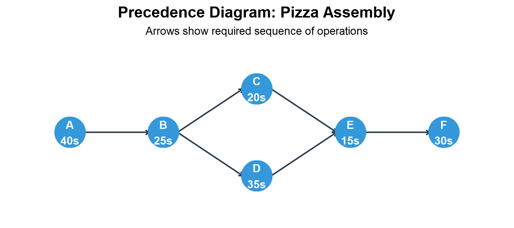
4.8.4 Line Balancing Calculation
This one is live — edit the numbers and re-run it to see how the results change.
Try It Yourself: Can you find a better balance?
Challenge: Can you assign tasks to only 3 stations while respecting the precedence constraints?
Hint: Consider these assignments: - Station 1: A (40s) + ? - Station 2: B (25s) + ? + ? - Station 3: ? + ?
Remember: Total time per station cannot exceed 60 seconds!
Solution: It’s actually possible with careful planning: - Station 1: A (40s) = 40s - Station 2: B (25s) + C (20s) + E (15s) = 60s (but E needs C AND D complete!)
So 3 stations is NOT feasible due to precedence constraints. The minimum is 4 stations for this problem.
4.9 Warehouse Layout Design
Warehouse layouts are a special case of process layouts focused on minimizing material handling.
4.9.1 Key Principles
- Place high-volume items near the dock
- Group items that are often picked together
- Use ABC analysis for storage assignment:
- A items (20% of SKUs, 80% of picks): Prime locations
- B items (30% of SKUs, 15% of picks): Secondary locations
- C items (50% of SKUs, 5% of picks): Remote locations
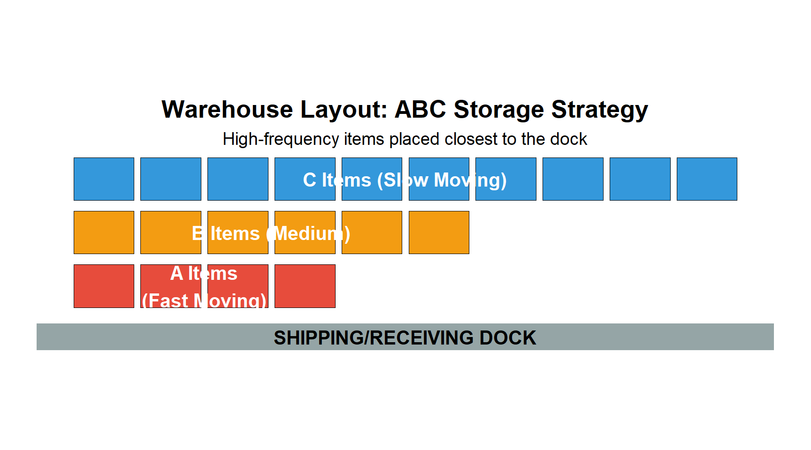
4.10 Office Layout Design
Office layouts balance communication needs with privacy requirements.
4.10.1 Two Main Approaches
| Aspect | Open Plan | Traditional/Closed |
|---|---|---|
| Space | Shared workspaces | Private offices |
| Walls | Partitions/dividers | Permanent walls |
| Flexibility | High - easy to reconfigure | Low - expensive to change |
| Communication | Excellent | Limited |
| Privacy | Low | High |
| Cost | Lower | Higher |
4.10.2 Office Ergonomics Checklist
Click to expand: Office Ergonomics Best Practices
Posture: - Support the small of the back - Keep shoulders relaxed - Maintain neutral wrist position - Feet flat on floor or footrest
Lighting: - Position monitor to reduce glare - Adjust brightness for screen vs. paper work - Use task lighting when needed
Workstation: - Monitor at arm’s length - Top of screen at or below eye level - Keyboard and mouse at elbow height
Work Habits: - Take breaks every 30-60 minutes - Vary tasks to prevent repetitive strain - Use keyboard shortcuts to reduce mouse use
4.10.3 The Future of Office Design
4.11 Summary: Choosing the Right Layout
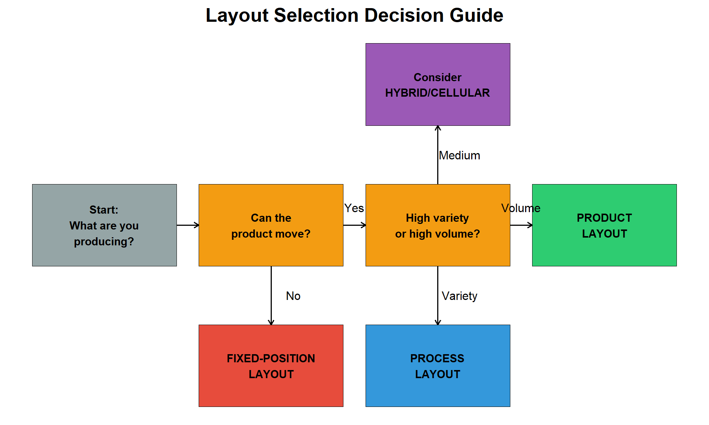
4.11.1 Key Takeaways
- Process layouts offer flexibility for varied products but have higher material handling costs
- Product layouts are efficient for high-volume, standardized products
- Cellular layouts provide a middle ground with benefits of both
- Fixed-position layouts are necessary when products cannot be moved
- Line balancing is critical for efficient product layouts
- Warehouse layouts should minimize travel distance for high-frequency items
4.12 Industry Case Studies
4.12.1 Case Study 1: Food Processing Plant Layout
Food processing facilities have unique layout requirements due to food safety, hygiene, and regulatory compliance.
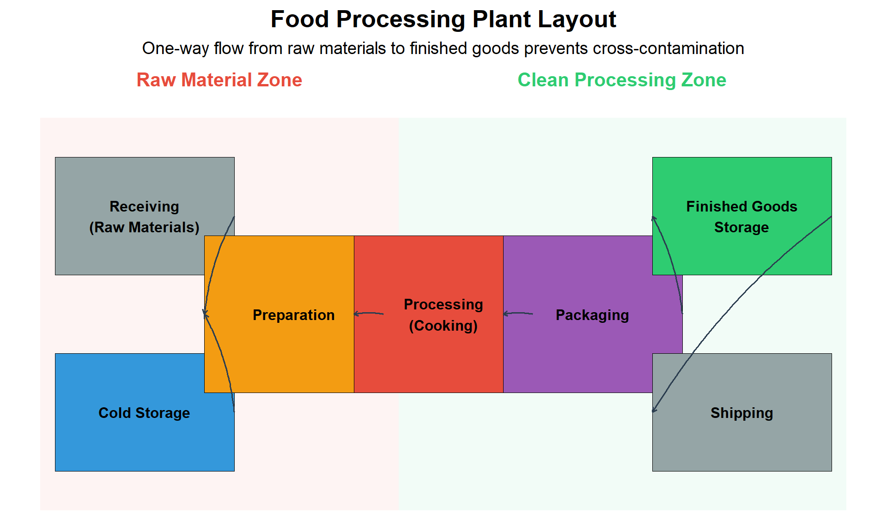
Key Design Principles for Food Processing:
| Principle | Description | Regulatory Reference |
|---|---|---|
| Linear Flow | Raw materials → Processing → Packaging (no backtracking) | FSMA |
| Zone Separation | Physical barriers between raw and ready-to-eat areas | HACCP |
| Cleanability | Smooth, non-porous surfaces; rounded corners; proper drainage | 3-A Standards |
| Temperature Control | Maintain cold chain; separate refrigerated zones | FDA 21 CFR 110 |
| Sanitary Design | Handwashing stations, foot baths, air curtains at zone transitions | USDA FSIS |
| Allergen Control | Dedicated lines or thorough cleaning between allergen products | FALCPA |
Discussion Question: Cross-Contamination Prevention
Question: A food processing plant produces both peanut butter products and tree nut-free products. What layout considerations are essential?
Key Considerations:
- Physical Separation: Completely separate production lines with physical barriers (walls, not just distance)
- Air Handling: Separate HVAC systems to prevent airborne allergen transfer
- Personnel Flow: Dedicated workers for each line, or strict gowning/cleaning procedures when crossing zones
- Scheduling: If shared equipment is unavoidable, schedule allergen products last before deep cleaning
- Traffic Patterns: Forklift and cart paths should not cross between allergen zones
- Verification: Air sampling and surface swabs to verify effectiveness
4.12.2 Case Study 2: Aerospace Manufacturing Facility
Aerospace facilities often use fixed-position layouts combined with process layouts for component fabrication.
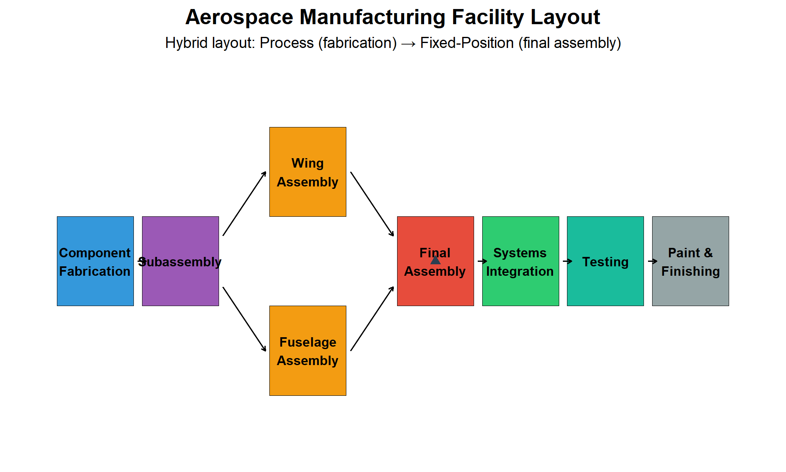
Aerospace Layout Characteristics:
- Clean rooms for precision components (hydraulics, avionics)
- High-bay areas for large assembly operations
- Overhead cranes for moving heavy components
- Flow-line final assembly (aircraft moves through stations) for high-volume commercial aircraft
- Fixed-position for military aircraft or low-volume production
- Strict FOD (Foreign Object Debris) control throughout
Video: Boeing 737 Assembly
Watch how Boeing uses a moving assembly line for high-volume aircraft production:
4.12.3 Case Study 3: Automotive Supplier - Hybrid Cell Layout
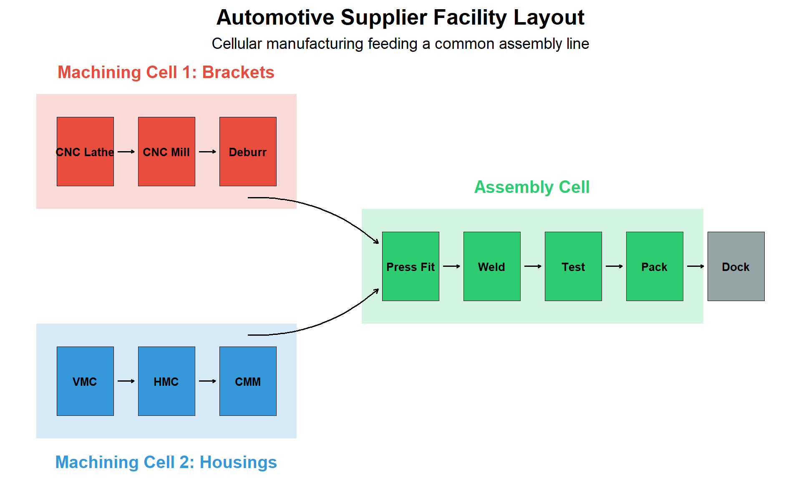
JIT Delivery Requirements:
Automotive suppliers must often deliver directly to the assembly line in sequence (JIS - Just-In-Sequence):
| Requirement | Typical Standard | Layout Impact |
|---|---|---|
| Delivery Window | ±30 minutes of scheduled time | Dedicated shipping lane, staging area near dock |
| Sequence Accuracy | 100% (0 sequence errors) | Pick-to-light systems, visual management |
| Quality Level | 0 PPM target (Six Sigma) | Inline inspection, mistake-proofing (poka-yoke) |
| Packaging | Returnable containers to line side | Container cleaning/storage area needed |
| Traceability | Full lot/serial traceability required | Barcode/RFID scanning stations throughout |
4.13 Ergonomics in Manufacturing
Ergonomics (human factors engineering) is critical for plant layout design to ensure worker safety, reduce injuries, and improve productivity.
4.13.1 The NIOSH Lifting Equation
The National Institute for Occupational Safety and Health (NIOSH) developed an equation to evaluate manual lifting tasks:
\[RWL = LC \times HM \times VM \times DM \times AM \times FM \times CM\]
Where RWL = Recommended Weight Limit (in pounds or kg)
| Factor | Name | Formula | Description |
|---|---|---|---|
| LC | Load Constant | 51 lb (23 kg) | Maximum weight under ideal conditions |
| HM | Horizontal Multiplier | 10/H | H = horizontal distance from spine to load (inches) |
| VM | Vertical Multiplier | 1 - 0.0075|V - 30| | V = vertical height of hands at start (inches) |
| DM | Distance Multiplier | 0.82 + 1.8/D | D = vertical travel distance (inches) |
| AM | Asymmetric Multiplier | 1 - 0.0032A | A = angle of asymmetry (degrees) |
| FM | Frequency Multiplier | Table lookup | Based on lift frequency and duration |
| CM | Coupling Multiplier | Table lookup | Based on grip quality (good/fair/poor) |
4.13.2 Lifting Index Calculation
\[LI = \frac{\text{Actual Weight}}{\text{RWL}}\]
| Lifting Index | Risk Level | Action Required |
|---|---|---|
| LI ≤ 1.0 | Low | Task is acceptable for most workers |
| 1.0 < LI ≤ 3.0 | Moderate | Task poses risk; engineering controls recommended |
| LI > 3.0 | High | Task is unacceptable; immediate redesign required |
4.13.3 NIOSH Lifting Example
Also live — try changing the box weight, distances, or lift frequency below and re-running.
Discussion Question: Reducing the Lifting Index
Based on the example above, what layout or workstation changes could reduce the Lifting Index?
Solutions (in order of effectiveness):
- Reduce horizontal distance (H): Move conveyor closer to pallet position
- If H = 10”: HM improves from 0.67 to 1.0 → RWL increases by 50%
- Raise the starting height (V): Use elevated pallet positions or pallet lifters
- If V = 30” (optimal): VM improves from 0.85 to 1.0 → RWL increases by 18%
- Eliminate asymmetry (A): Reposition conveyor directly in front of pallet
- If A = 0°: AM improves from 0.90 to 1.0 → RWL increases by 11%
- Reduce frequency: Add a second worker or use automation
- If 1 lift/min: FM improves from 0.72 to 0.94 → RWL increases by 31%
- Improve coupling: Use boxes with good handles
- If good coupling: CM improves from 0.95 to 1.0 → RWL increases by 5%
Best solution: Implement a scissor lift for the pallet (adjustable height) and move the conveyor closer. This addresses the largest multiplier reductions.
4.13.4 Ergonomic Workstation Design
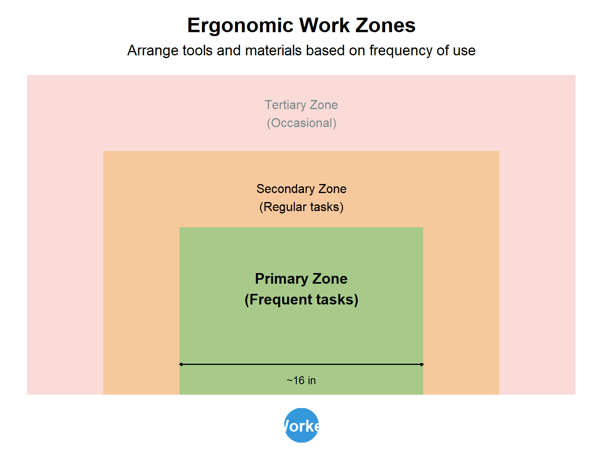
Layout Implications:
- Primary zone: Most frequently used tools and parts
- Secondary zone: Regularly used items, occasional reaches
- Tertiary zone: Rarely needed items, should trigger redesign if frequent use required
4.14 Modern Layout Trends and Industry 4.0
4.14.1 Flexible Manufacturing Layouts
Modern facilities must adapt quickly to changing product demands. Key trends include:
| Trend | Description | Benefits |
|---|---|---|
| Modular Workstations | Pre-built workstation modules that can be relocated in hours | Rapid response to volume changes, easy expansion |
| Reconfigurable Cells | Cells with standardized machine interfaces for quick changeover | Switch between product families without major capital |
| Mobile Equipment | Equipment on wheels or air bearings for rapid repositioning | Eliminate fixed foundations, reduce floor damage |
| Flexible Utilities | Overhead utility drops and floor trenches allow equipment mobility | No hardwired constraints on equipment placement |
| Digital Layout Planning | Digital twins enable virtual layout testing before physical changes | Reduce trial-and-error, optimize before implementation |
4.14.2 Industry 4.0 Layout Considerations
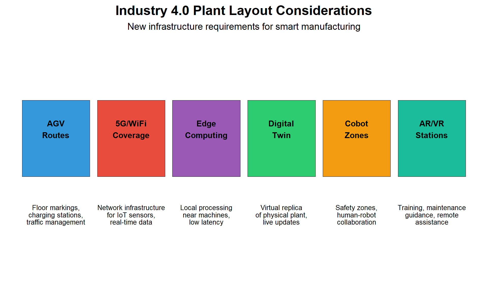
4.14.3 AGV and AMR Traffic Planning
Automated Guided Vehicles (AGVs) and Autonomous Mobile Robots (AMRs) require careful layout planning:
| Consideration | Design Guidelines |
|---|---|
| Route Design | Unidirectional loops preferred; minimize intersections; avoid steep grades |
| Charging Locations | Opportunity charging at pickup/dropoff points; dedicated charging bays for breaks |
| Traffic Intersections | Yield zones, traffic signals, or elevation changes at crossings |
| Floor Requirements | Smooth, level surfaces; magnetic tape or QR codes for navigation; no oil/water |
| Safety Zones | Minimum 1m clearance from pedestrian paths; light curtains at crossings |
| Staging Areas | Buffer areas for queue management; waiting positions clear of traffic |
Video: AGV Systems in Modern Warehouses
4.15 Layout Simulation Software
Modern plant layout design relies heavily on simulation software to test alternatives before physical implementation.
4.15.1 Common Layout Planning Software
| Software | Primary Use | Key Features | Typical Users |
|---|---|---|---|
| AutoCAD Factory Design Suite | 2D/3D CAD layout design | Extensive equipment libraries, interference checking, material flow analysis | Facility engineers, architects |
| FlexSim | 3D discrete event simulation | Drag-and-drop modeling, VR capability, real-time 3D animation | Industrial engineers, consultants |
| Arena | Process simulation | Statistical analysis, what-if scenarios, bottleneck identification | Process engineers, academics |
| Plant Simulation (Siemens) | Digital factory simulation | Full Siemens integration, AGV simulation, energy analysis | Large manufacturers (automotive, aerospace) |
| SketchUp + Extensions | Quick 3D visualization | Low cost, easy learning curve, walkthrough capability | Small businesses, initial concepts |
4.15.2 Simulation Benefits
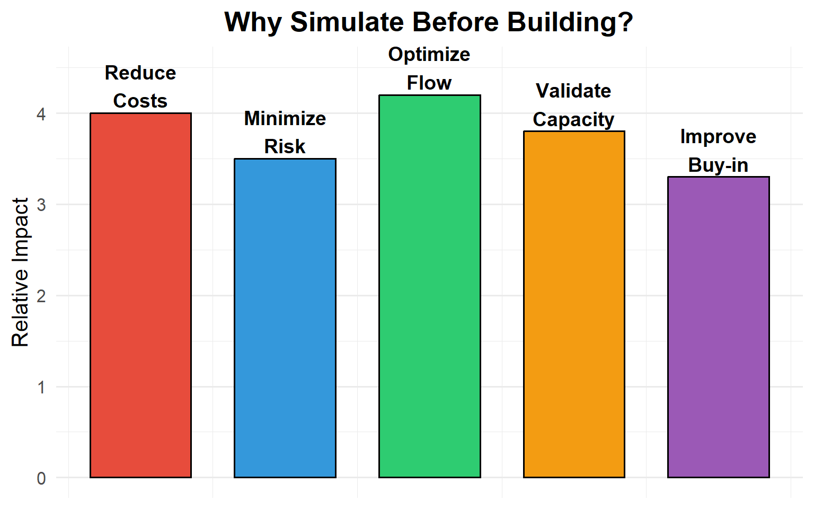
ROI of Simulation:
- 10-20x return on simulation investment typical
- 30-50% reduction in layout change costs
- Weeks to months saved in ramp-up time
- Stakeholder alignment - visual communication of concepts
Video: Plant Simulation Demo
4.16 Practice Problems
Problem 1: Layout Selection
Scenario: A company manufactures custom kitchen cabinets. Each order is unique, with different dimensions, materials, and finishes. Production volume is about 50 units per month.
Question: Which layout type would you recommend and why?
Answer: A process layout would be most appropriate because: - High product variety (custom orders) - Low production volume - Different operations needed for each order - Flexibility is more important than efficiency
Problem 2: Line Balancing
Given: - Total task time: 240 seconds - Desired output: 30 units per hour - Available time: 3600 seconds per hour
Calculate: 1. Cycle time 2. Theoretical minimum number of stations 3. If you use 3 stations, what is the efficiency?
Solution: 1. Cycle time = 3600 / 30 = 120 seconds 2. TM = 240 / 120 = 2 stations 3. Efficiency = (240 / (3 × 120)) × 100 = 66.7%
Problem 3: Warehouse Layout
Scenario: A warehouse has the following items: - Item X: 500 picks/day - Item Y: 100 picks/day - Item Z: 50 picks/day
Question: How should these items be positioned relative to the shipping dock?
Answer: Using ABC analysis: - Item X (high frequency): Closest to dock (A zone) - Item Y (medium frequency): Middle distance (B zone) - Item Z (low frequency): Farthest from dock (C zone)
4.17 Review Questions
Question 1: What distinguishes a cellular layout from both process and product layouts?
Answer: A cellular layout combines characteristics of both:
- From process layout: Equipment variety within each cell, flexibility to handle part variations
- From product layout: Sequential flow within the cell, dedicated equipment for part families
- Unique characteristics:
- Parts grouped into families using Group Technology
- Cells are self-contained mini-factories
- Workers often cross-trained to operate multiple machines
- Reduced material handling compared to process layout
- More flexibility than pure product layout
Question 2: Calculate the Lifting Index for the following scenario
Scenario: A worker lifts 25 kg boxes from floor level (V=0) to a shelf at waist height. The horizontal distance is 40 cm, vertical travel is 75 cm, no asymmetry, frequency is 2 lifts per minute for 4 hours, and coupling is poor (no handles).
Given multipliers: - LC = 23 kg - HM = 25/H (H in cm) - VM = 1 - 0.003|V - 75| (V in cm) - DM = 0.82 + 4.5/D (D in cm) - AM = 1.0 (no asymmetry) - FM = 0.65 (from tables) - CM = 0.90 (poor coupling)
Solution:
HM = 25/40 = 0.625
VM = 1 - 0.003|0 - 75| = 1 - 0.225 = 0.775
DM = 0.82 + 4.5/75 = 0.82 + 0.06 = 0.88
AM = 1.0
FM = 0.65
CM = 0.90
RWL = 23 × 0.625 × 0.775 × 0.88 × 1.0 × 0.65 × 0.90
RWL = 23 × 0.625 × 0.775 × 0.88 × 0.65 × 0.90
RWL = 5.7 kg
LI = 25/5.7 = 4.4
Risk Level: HIGH (LI > 3.0) - Immediate redesign requiredRecommended actions: Raise starting height (use pallet lifter), reduce horizontal distance, add handles to boxes, reduce frequency.
Question 3: List three Industry 4.0 technologies that impact plant layout design
Answer: (Any three of the following)
- AGVs/AMRs: Require route planning, charging stations, floor markings, safety zones
- Collaborative robots (cobots): Need safety zones, but smaller footprint than traditional robot cells
- Digital twins: Enable virtual layout testing, reduce physical prototyping
- IoT sensors: Require network infrastructure (5G/WiFi), edge computing locations
- AR/VR systems: Training stations, remote assistance capabilities
- Flexible automation: Modular equipment, quick-connect utilities
Question 4: What are the key differences between food processing plant layouts and general manufacturing?
Answer:
| Aspect | Food Processing | General Manufacturing |
|---|---|---|
| Flow direction | Strictly one-way (raw → finished) | Can have backtracking |
| Zone separation | Physical barriers between raw/clean | Logical separation often sufficient |
| Surfaces | Sanitary design, smooth, cleanable | Durability focused |
| Temperature | Multiple temperature zones (cold chain) | Generally ambient |
| Regulatory | HACCP, FSMA, FDA oversight | OSHA, industry standards |
| Allergen control | Dedicated lines or validated cleaning | Not typically a concern |
| Traceability | Lot-level required by regulation | Often batch-level sufficient |
Question 5: A warehouse has three product categories with the following pick frequencies. Design the storage zones.
Data: - Category A: 1200 picks/day, 500 SKUs - Category B: 600 picks/day, 1500 SKUs - Category C: 200 picks/day, 3000 SKUs
Solution:
Using ABC analysis based on pick frequency: - Category A (60% of picks, 10% of SKUs): Prime locations closest to shipping dock - Category B (30% of picks, 30% of SKUs): Secondary locations, moderate distance - Category C (10% of picks, 60% of SKUs): Remote locations, maximum distance from dock
Additional considerations: - Within each zone, use cube utilization for dense storage of slow movers - Consider pick path optimization (serpentine vs. return routing) - High-frequency items at ergonomic pick heights (waist level) - Reserve space near dock for cross-docking high-velocity items
4.18 Chapter Summary
| Topic | Key Concepts | Key Formulas |
|---|---|---|
| Layout Types | Fixed-position, Process, Product, Hybrid/Cellular - selected based on volume and variety | Layout selection: Volume × Variety matrix |
| Process Layout Design | From-To matrix, Load-Distance model, Block plans, Closeness relationships | Cost = Σ Lij × Dij × C |
| Product Layout (Line Balancing) | Cycle time, Theoretical minimum stations, Precedence diagrams, Line efficiency | C = Time/Output; TM = Σti/C; Eff = Σti/(n×C) |
| Cellular Manufacturing | Group Technology, Part families, Self-contained cells, Reduced material handling | Cell efficiency = Output/(Input × Time) |
| Warehouse Design | ABC analysis, High-frequency items near dock, Pick path optimization | Travel distance = Σ(picks × distance) |
| Ergonomics | NIOSH lifting equation, RWL, Lifting Index, Work zones, Workstation design | RWL = LC×HM×VM×DM×AM×FM×CM; LI = Weight/RWL |
| Modern Trends | Flexible layouts, Industry 4.0, AGV/AMR planning, Digital twins | ROI = (Savings - Investment)/Investment |
| Simulation | FlexSim, Arena, Plant Simulation - virtual testing before physical changes | Simulation accuracy > 90% typical |
4.19 References
- Reid, R. D., & Sanders, N. R. (2019). Operations Management: An Integrated Approach (7th ed.). Wiley. Chapter 10.
- Groover, M. P. (2020). Automation, Production Systems, and Computer-Integrated Manufacturing (5th ed.). Pearson.
- Waters, T. R., Putz-Anderson, V., & Garg, A. (1994). Applications Manual for the Revised NIOSH Lifting Equation. NIOSH Publication No. 94-110.
- Tompkins, J. A., White, J. A., Bozer, Y. A., & Tanchoco, J. M. A. (2010). Facilities Planning (4th ed.). Wiley.
- FDA. (2021). Current Good Manufacturing Practice, Hazard Analysis, and Risk-Based Preventive Controls for Human Food. 21 CFR Part 117.
- OSHA. (2021). Ergonomics: The Study of Work. OSHA Publication 3125.